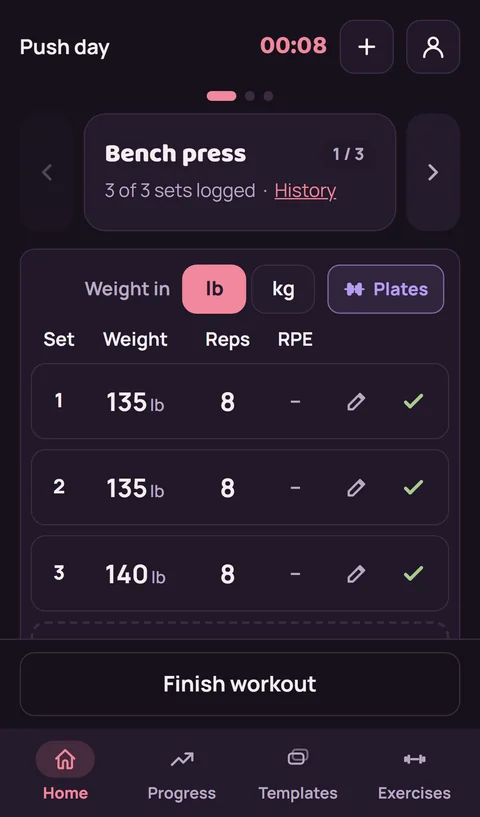
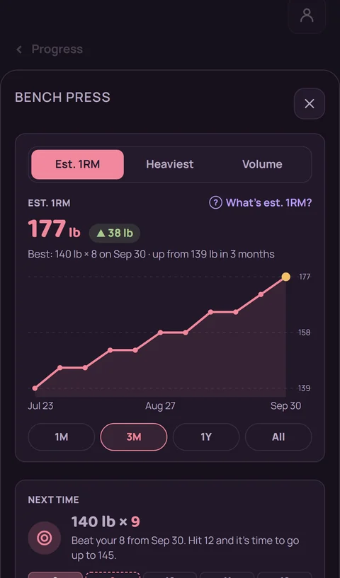
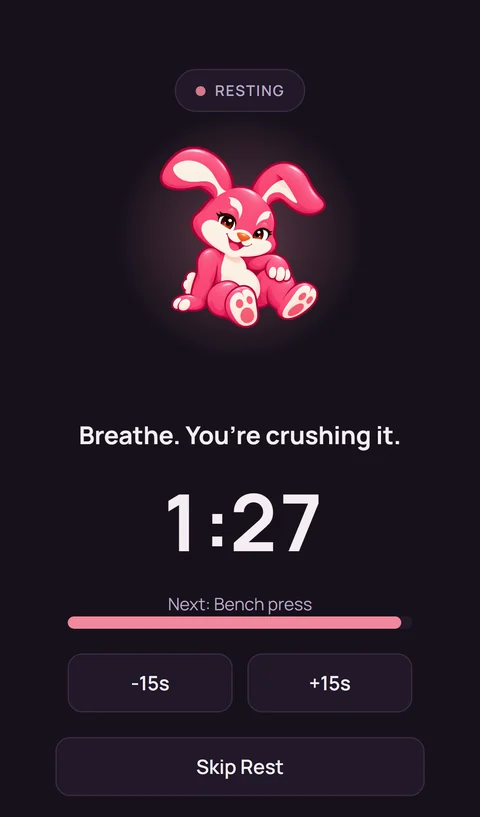

Play phone screenshots, 1080 by 1920, shown at a third of their size. Store search results show only the top of the first two or three shots, so the caption has to carry the point on its own.
Headline in Baloo 2 with one pink word, a dim one-line subcaption, then the real screen in a dark phone frame that runs off the bottom edge. The caption reads first in search results, and the plum backdrop matches the app and the feature graphic.



Shows more of the screen, but the caption sits where search results cut it off, and a wall of pink goes against "pink is an accent, not a fill" in the brand guide.